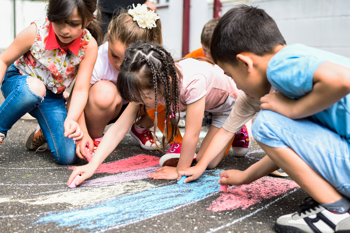

ტყიბულის პირველი საბავშვო ბაღის აღსაზრდელები ხელებს დღეში მინიმუმ 8-ჯერ იბანენ — ოთხჯერადი კვების ჰიგიენური ნორმები ასე მოითხოვს.
ცხადია, ეს და ბავშვების ყველა სხვა საჭიროება ცხელ წყალმომარაგებასა და ფინანსებთანაა დაკავშირებული, რაც ტყიბულის მსგავს მაღალმთიან რაიონებში ხშირად პრობლემური საკითხია.
ამ სირთულის საპასუხოდ ტყიბულის პირველ საბავშვო ბაღში ცხელი წყალმომარაგებისთვის მზის ენერგიას იყენებენ. ეს მუნიციპალიტეტის ყველაზე დიდი საბავშვო ბაღია თავისი ასამდე აღსაზრდელით. მზის რესურსით მათი უზრუნველყოფა გარემოსდამცველთა ერთობლივი მუშაობისა და ევროკავშირის ფინანსური მხარდაჭერის შედეგია.
1997 წელს, 90-იანი წლების ბოლოს ქვეყანაში არსებული რთული ვითარების ფონზე, გარემოსდაცვითი პრობლემები მეტად აქტუალური საკითხი გახდა. ამ და ცნობიერების ამაღლების კუთხით სხვა გამოწვევების საპასუხოდ მეცნიერები, უნივერსიტეტის თანამშრომლები, გაერთიანდნენ და იმერეთის მხარის მეცნიერთა კავშირი "სპექტრი" დააარსეს.